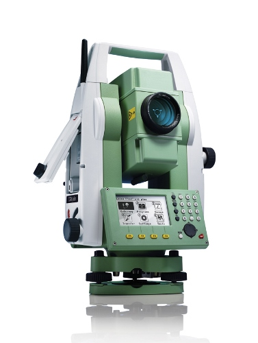

Batimetria
A Batimetria é a medição de profundidade em oceanos, lagos, rios, etc. e é expressa cartograficamente por curvas batimétricas que unem pontos da mesma profundidade com equidistancias verticais (curvas isobatimétricas), semelhantes às curvas de nível topografico.
Para conhecer mais sobre batimetria e nossos trabalhos, clique abaixo
Topografia
Uma palvara que vem do Grego, Topos, que significa lugar, região, e Grapho, que significa descrever. Portanto Topografia é a ciencia que estuda o relevo da Terra.
Para Conhecer mais sobre o nosso trabalho na area de topografia, clique abaixo
Geotecnia
É a aplicação de metodos científicos e principios de engenharia para a aquisição, interepretação e uso do conhecimento de materiais terrestres para a solução de problemas da engenharia.
Confira mais sobre o nosso trabalho na area de geotecnia:
A Empresa
A JR Novo Serviços Técnicos LTDA é uma empresa criada para atender um mercado especifico, o das pesquisas técnicas para a area de engenharia.
Confira mais sobre o nosso trabalho, nossas origens e nossa missão.
Contato
Para entrar em contato conosco, basta preencher o formulario disponivel no botão abaixo.
Você ainda pode entrar em contato ligando nos telefones
13 2138-3681,13 2202-2612,
13 2202-2613 ou ainda
13 7804-4754
Você ainda pode enviar um email para jrnovo@jrnovo.com solicitando orçamentos, informações ou mesmo um contato.

Confira aqui fotos de trabalhos já realizados na área de Topografia.

Confira aqui fotos de trabalhos já realizados na área de Batimetria.

Confira aqui fotos de trabalhos já realizados na área de Geotecnia.